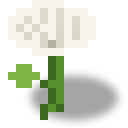

Kok-Sagyz
概述
青胶蒲公英（kok sagyz）是多年生产胶蒲公英，也是本模组第一种能产出橡胶的农作物。这是农人对石油有限性的回答：聚合机的生胶依赖不可再生的石油，而青胶蒲公英可以在农田里无限生长。用它做橡胶更费时间、更省 EU/FE——正是水晶温室的准则应用到了材料上。
植株是 1×3 的柱状体：地上一朵花，地下两个根块。花下方的土壤会生根，柱体达到全深后，最下方的根块（根尖）可以挖出：掉落根物品，植株存活并重新长出根尖。挖掉花或上方的根则会杀死植株——橡胶藏在深处，不在顶端。
现实原型
青胶蒲公英（Taraxacum kok-saghyz，"俄罗斯蒲公英"）是中亚特有植物：哈萨克斯坦、吉尔吉斯斯坦、乌兹别克斯坦、卡拉套山脉。名字来自哈萨克语 "kök-sağız"，意为"绿色口香糖"——哈萨克人传统上咀嚼其根部乳汁。橡胶只存在于根部的乳汁管中（野生占干重 5–12%，育成品系可达 25%）；经典的田间测试是把晒干的根折断，看断面之间拉出的橡胶细丝。
1932 年苏联探险队在哈萨克斯坦发现了它；苏联从 1931 年栽培到约 1950 年，到 1941 年青胶蒲公英提供了苏联约三分之一的橡胶。当日本切断美国的橡胶树供应后，美国的"应急橡胶计划"（1942–45）在约 30 个州的试验站播种了它——该计划被称为"农业界的曼哈顿计划"。战后被廉价合成橡胶和恢复供应的橡胶树终结。如今是俄亥俄州立大学的 PENRA 联盟与普利司通在推进；2019 年大陆集团卖出了第一条蒲公英橡胶自行车胎。加工的副产物菊粉（生物乙醇原料）在模组里同样出自粉碎机。
获取
野生植株。最初的种子来自世界：成熟的青胶蒲公英花（绒球阶段）生成于平原和稀树草原生物群系（平原、向日葵平原、三种稀树草原），每区块稀有度 1/8，最多 12 朵散布其中。野生的根会自行长成。仅限新区块——已生成的地形不会再出现野生植株（见"旧世界"）。
种植。种子（kok_sagyz_seeds）种在单独一格土壤上：泥土（#minecraft:dirt）、草方块、灰化土、菌丝体、泥巴、沙子（#minecraft:sand）、耕好的农田，以及 #minecraft:supports_crops 中其他模组的土壤。深度不是必需的——根会自适应：下方有两格土壤时长成向下两格的根柱，石头上只有一格土壤时根尖直接长在花朵下方。非土壤方块（石头、木板、树叶）无法种植。
生命周期
植株在光照 ≥9 时随机刻生长（与原版作物相同）。花的阶段（age 0..3）：莲座叶丛 → 花苞 → 黄花 → 绒球。成熟的花会生根：正下方的第一个土壤块变成"带根的泥土"，随后根下探到 2 格深——最下方的块带有 tip 属性（根尖）。柱体全深即完全成熟。
| 阶段 | 除数 | 大致耗时 |
|---|---|---|
| 地上部分，3 个阶段，农田（除数 1） | = 1 | 约 3.4 分钟（按平均随机刻每阶段约 68 秒） |
| 根部，再向下 2 格 | = 1 | 再约 2.3 分钟 |
| 同一植株在野生土地（非农田）上 | = ×2 | 慢一倍 |
在野生土地（普通泥土——非农田、非植株自身的根）上，两个除数都乘以 2——野生植株比照料的长得慢。骨粉和洒水器能加速生长，但买到的是速度而非豁免：每次使用恰好推进一步（一个阶段或一格根），光照下限和"有无处可长"的检查依然生效。
收获根尖后，植株以根部生长的同样速度重新长出它。
收获
唯一的规则：挖根尖，别拔花。根尖是最下方的根块，在花下方两格。
| 操作 | 结果 |
|---|---|
挖掉最下方的根块（根尖，tip=true） | 掉落 1 × 青胶蒲公英根 + 35% 概率种子；原处留下泥土；植株存活并重新长出根尖 |
| 挖掉花或上方的根块 | 植株死亡；35% 概率种子，没有根 |
| 移除下方根块之下的支撑 | 柱体垮塌——植株死亡 |
| "像蒲公英一样摘下绒球"（对绒球右键） | 一无所获——橡胶在土里，不在绒球里 |
根尖收获是无限的，也无需补种：建好种植园，之后定期来挖就行。扩产用的种子来自收获概率和野生植株。
加工
根进入粉碎机——链条中没有新机器：
| 材料 | 产物 | EU/FE |
|---|---|---|
| 2 × 青胶蒲公英根 | 1 × 生胶 + 1 × 菊粉（副产物） | 300 |
菊粉不与生胶堆叠在同一格：副产物从机器顶部弹出——在粉碎机上方放漏斗或管道即可自行运走，绝不阻塞工作（不可堆叠的副产物从不停机）。之后走标准链条：硫化机（1 生胶 + 4 硫粉 → 橡胶，400 EU/FE）。
自动化
青胶蒲公英属于 标签：
- 镰刀（对成熟植株潜行右键）自动收割根尖——精准、不伤植株。
- 园丁无人机对成熟柱体同样只挖最下方的根块并拾取掉落物。
- 洒水器逐步加速生长（见"生命周期"）。
进度
青胶蒲公英是 LV 时代可再生橡胶分支的入口：电缆绝缘、advanced_circuit 和绝缘护甲套装如今可以靠种地获得。成就"深深的根"（kok_sagyz_root，条件——背包中有根）插在 first_oil 与 rubber_production 之间：挖田的玩家和抽油的玩家从两侧走向同一种橡胶。
旧世界
野生植株只在新区块生成：已生成的草原不会再被播种。旧世界里完全找不到第一颗种子——但从别的世界/别的玩家那里拿来的一颗种子就能展开成无限种植园，因为不再需要补种。
方块属性
| 属性 | 数值 |
|---|---|
| 花 | 十字形无碰撞，age 0..3，随机刻 |
| 根块 | "带根的泥土"整方块（参照原版 rooted dirt），tip 属性 |
| 柱体 | 1×3：花 + 2 个根块 |
| 土壤 | #minecraft:dirt、草方块/灰化土/菌丝体/泥巴、#minecraft:sand、#minecraft:supports_crops；一格即可 |
开放问题
- 菊粉暂时是无配方的物品——为未来任务的饲料/食物留的底（所有者决定， §5.6）。
- 银胶菊与一枝黄花是本分支的后续植物（同一任务，第 2+ 阶段）。
相关
- 粉碎机——把根连同菊粉粉碎成生胶。
- 硫化机——生胶 + 硫 → 橡胶（日后也可用银胶菊树脂）。
- 孵化器——作为应急路线的橡胶复制（）。
- 橡胶——材料及其消费者。
- 洒水器、园丁无人机站、镰刀——生长与收获的自动化。